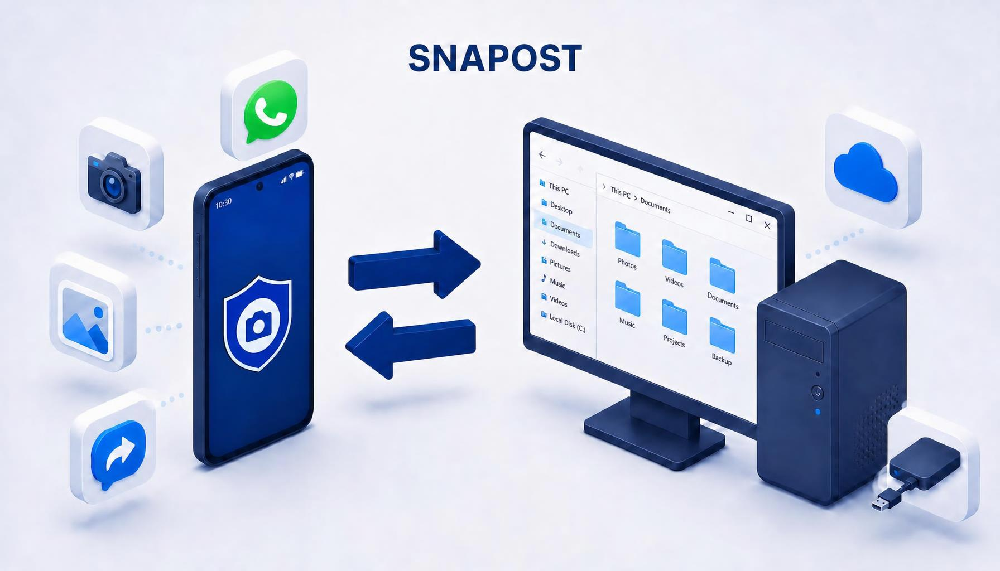

Install both apps
Install Snapost on your Android phone and Windows PC.
Snapost pairs your Android phone with your Windows PC over local Wi-Fi. Choose a tag before you shoot, then find the photo already organized where it belongs.

Snapost connects your Android camera to a Windows app that delivers photos into the folders you choose. Send in either direction.
Install Snapost on your Android phone and Windows PC.
Show the pairing QR code in the Windows app and scan it with your phone. Keep both devices on the same local Wi-Fi network.
Connect each tag to a destination folder on your PC. Photos follow the folder you chose.
Keep control of each transfer while Snapost takes care of the filing.
Choose a destination such as Work, Home, or a project. The photo arrives in the matching folder on your PC.
Send photos right away or keep them queued on your phone until you are ready.
Deliver photos automatically or review them in the Windows inbox before placing them in their tag folders.
Send PDFs, Word and Excel documents, and text files from your phone to your PC, with or without a tag.
Choose photos on your PC and transfer them to your phone's gallery without a cable.
Add a note to a photo on your phone or PC and find it with the image later.
Install both apps for the complete phone-to-PC workflow.
Take tagged photos, manage your queue, and send files to your PC.
Get it on Google PlayReceive photos, organize them into tag folders, and transfer photos back to your phone.
Download the Windows installer Windows may show a SmartScreen warning because the installer is not code-signed. Download only from this official site and continue only if you trust the file.Yes. Snapost for Windows creates tags and links them to folders. The Android app takes photos and sends them; the Windows app receives and organizes them.
Pairing and standard transfers use your local network. Your PC must be on and the Windows app running to receive photos.
No. Photo transfers happen over your local Wi-Fi network. Snapost does not use cloud storage or require an account.
The free version includes up to 4 tags. Snapost Premium costs €4.99 as a one-time purchase, with no subscription.
Tell us what you think or ask us anything about Snapost.
Email the Snapost team